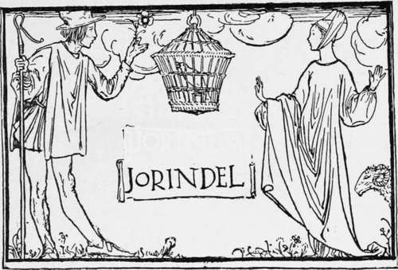
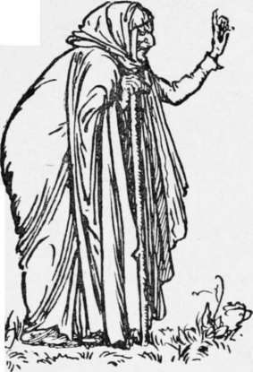

Jorinda And Jorindel
Description
This section is from the book "Household Tales by Brothers Grimm", by Brothers Grimm. Also available from Amazon: Household Tales by Brothers Grimm.
Jorinda And Jorindel
There was once an old castle, that stood in the middle of a deep gloomy wood, and in the castle lived an old fairy. Now this fairy could take any shape she pleased. All the day long she flew about in the form of an owl, or crept about the country like a cat; but at night she always became an old woman again. When any young man came within a hundred paces of her castle, he became quite fixed, and could not move a step till she came and set him free; which she would not do till he had given her his word never to come there again: but when any pretty maiden came within that space she was changed into a bird, and the fairy put her into a cage, and hung her up in a chamber in the castle. There were seven hundred of these cages hanging in the castle, and all with beautiful birds in them.
Now there was once a maiden whose name was Jorinda. She was prettier than all the pretty girls that ever were seen before, and a shepherd lad, whose name was Jorindel, was very fond of her, and they were soon to be married. One day they went to walk in the wood, that they might be alone ; and Jorindel said, " We must take care that we don't go too near to the fairy's castle." It was a beautiful evening; the last rays of the setting sun shone bright through the long stems of the trees upon the green underwood beneath, and the turtledoves sang from the tall birches.
Jorinda sat down to gaze upon the sun; Jorindel sat by her side; and both felt sad, they knew not why; but it seemed as if they were to be parted from one another for ever. They had wandered a long way; and when they looked to see which way they should go home, they found themselves at a loss to know what path to take.
The sun was setting fast, and already half of its circle had sunk behind the hill: Jorindel on a sudden looked behind him, and saw through the bushes that they had, without knowing it, sat down close under the old walls of the castle. Then he shrank for fear, turned pale, and trembled. Jorinda was just singing—
"The ring-done sang from the willow spray,
Well-a-day! Well-a-day! He mourn'd for the fate of his darling mate,
Well-a-day! " when her song stopped suddenly. Jorindel turned to see the reason, and beheld his Jorinda changed into a nightingale ; so that her song ended with a mournful jug, jug. An owl with fiery eyes flew three times round them, and three times screamed—
"Tu whu! Tu whu! Tu whu!
Jorindel could not move; he stood fixed as a stone, and could neither weep, nor speak, nor stir hand or foot. And now the sun went quite down; the gloomy night came; the owl flew into a bush; and a moment after the old fairy came forth pale and meagre, with staring eyes, and a nose and chin that almost met one another.
She mumbled something to herself, seized the nightingale, and went away with it in her hand. Poor Jorindel saw the nightingale was gone,—but what could he do? he could not speak, he could not move from the spot where he stood. At last the fairy . ^ came back and sang with a hoarse voice—
"Till the prisoner is fast,
And her doom is cast,
There stay ! Oh stay! When the charm is around her, And the spell has bound her
Lie away! away!"
On a sudden Jorindel found himself free. Then he fell on his knees before the fairy, and prayed her to give him back his dear Jorinda: but she laughed at him, and said he should never see her again; then she went her way.
He prayed, he wept, he sorrowed, but all in vain. " Alas! " he said, " what will become of me ? " He could not go back to his own home, so he went to a strange village, and employed himself in keeping sheep. Many a time did he walk round and round as near to the hated castle as he dared go, but all in vain; he heard or saw nothing of Jorinda.
At last he dreamt one night that he found a beautiful purple flower, and that in the middle of it lay a costly pearl; and he dreamt that he plucked the flower, and went with it in his hand into the castle, and that every thing he touched with it was disenchanted, and that there he found his Jorinda again.
In the morning when he awoke, he began to search over hill and dale for this pretty flower; and eight long days he sought for it in vain: but on the ninth day, early in the morning, he found the beautiful purple flower; and in the middle of it was a large dew-drop, as big as a costly pearl. Then he plucked the flower, and set out and travelled day and night, till he came again to the castle.
He walked nearer than a hundred paces to it, and yet he did not become fixed as before, but found that he could go quite close up to the door. Jorindel was very glad indeed to see this. Then he touched the door with the flower, and it sprang open; so that he went in through the court, and listened when he heard so many birds singing. At last he came to the chamber where the fairy sat, with the seven hundred birds singing in the seven hundred cages. When she saw Jorindel she was very angry, and screamed with rage; but she could not come within two yards of him, for the flower he held in his hand was his safeguard. He looked around at the birds, but alas! there were many, many nightingales, and how then should he find out which was his Jorinda? While he was thinking what to do, he saw the fairy had taken down one of the cages, and was making the best of her way off through the door. He ran or flew after her, touched the cage with the flower, and his Jorinda stood before him, and threw her arms round his neck; looking as beautiful as ever, as beautiful as when they walked together in the wood.
Then he touched all the other birds with the flower, so that they all took their old forms again; and he took Jorinda home, where they were married, and lived happily together many years: and so did a good many other lads, whose maidens had been forced to sing in the old fairy's cages by themselves, much longer than they liked.
Continue to:
Tags
fairy tales, children's stories, brothers grimm, household tales